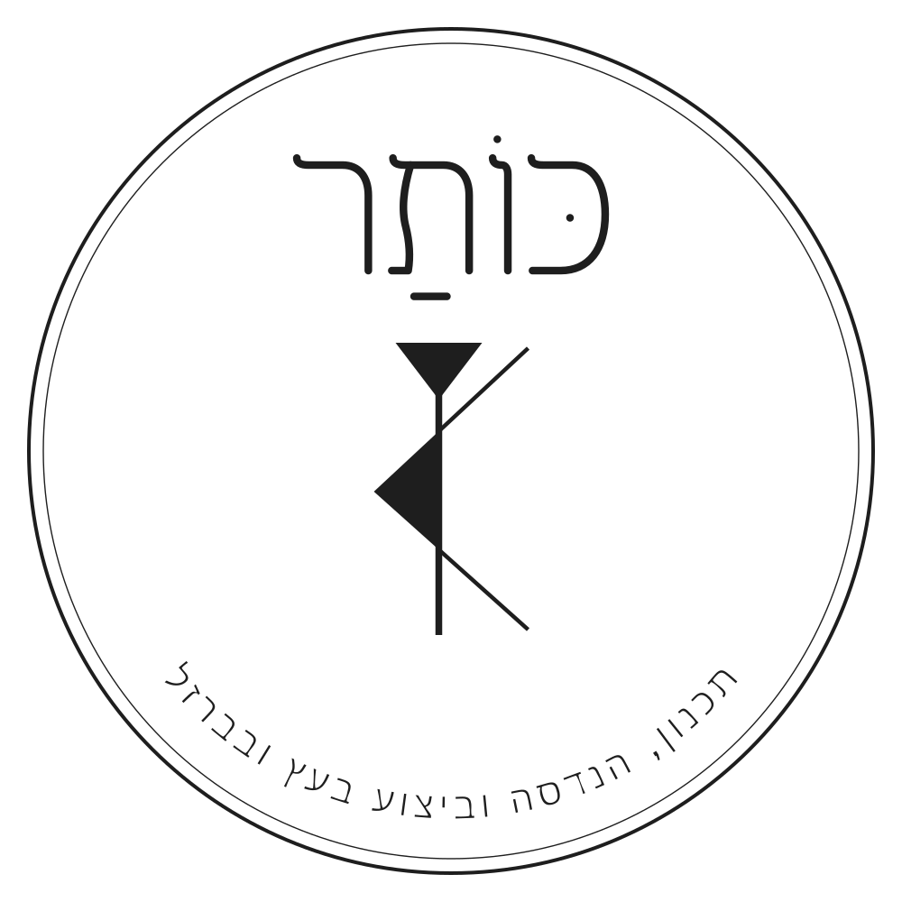

128
128כותר, משפחת לוגו v6
סבב התיקונים לפי הבריף מ-2026-10-29. כל הקבצים וקטוריים (SVG), שקופים ברקע. גרסאות הלבן נראות כאן על רקע כהה, ובפתיחה ישירה הן יראו ריקות, זה תקין.
מה תוקן
- עובי קו בסמל: העמוד והזרועות האלכסוניות עובו (העמוד פי 2.4, הזרועות פי 3.5 בחותם, יותר בסמל הקטן), כדי שיחזיקו מול המשולשים המלאים.
- אחידות האותיות: לכל האותיות אותו "דגל" בפתיחה ואותה כתף, ה-ו' ירדה לקו העליון המשותף, ה-ר' קיבלה רגל ישרה, הרווחים בין האותיות שווים, והקו עובה מעט כדי להתאים לסמל.
- ת' שלא נראית כמו מ': ב-v5 לרגל הימנית של ה-ת' היה "עקב" שסגר את התחתית מימין, כמו ב-מ'. עכשיו הרגל הימנית יורדת ישר, והעקב נשאר רק ברגל השמאלית, כמו ב-ת' כתובה.
- ניקוד: נוסף דגש ב-כּ. ב-v5 היו חולם ופתח בלי דגש, וזה נקרא "חוֹתַר". עכשיו: כּוֹתַר.
- הטקסט המעגלי נשאר כפי שהיה, והטבעות עובו מעט.
1. חותם עגול
 v6
v6 v5, להשוואה
v5, להשוואההדמיית צריבה על עץ
הדמיה בדפדפן בלבד. הבדיקה האמיתית היא צריבה של מדבקה או לוח קטן, ראו את תכנית הספרינט.
2. סמל לבד
קריטריון: קריא ב-32 פיקסלים.
12864כותר | פרגולות... משמאל v5, מימין v6
משמאל v5, מימין v63. אופקי: סמל ולידו "כותר"

בראש חשבונית
כותרת האתר בנייד
גרסה עדינה (קו דק)
הסמל בעובי של v5, עם תיקוני האותיות של הסבב הזה. לשימושים גדולים בלבד: קיר, דפוס, תמונה ראשית באתר. לא לצריבה, לא לאייקון ולא לגדלים קטנים.

חותם עדין אופקי עדין
אופקי עדין
עדין, לבן4. הפוך, לבן על כהה


